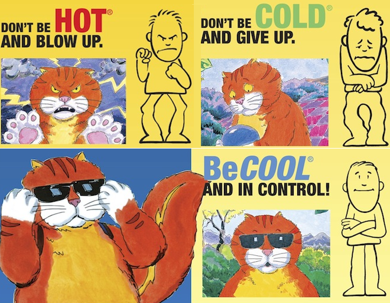

Welcome to Statistics
Table of Contents
- Why Statistics?
- Advice on How To Study Math
- Ch.6 Probability
- Ch.7 Discrete Random Variables and Probability Distributions
- Ch.3 & Ch.4 & Ch.5 Data
- Ch.7 Continuous Random Variables and Normal Distribution
- Ch.8 & Ch.9 Sampling Distribution and Estimation Using a Single Sample
- Ch.10 Hypothesis Test Using a Single Sample
Why Statistics?
- Taking Statistics can lead to a future in 32 college majors and 106 career areas. (see College Board )
Aerospace Engineering, Agricultural Engineering, Air Transportation, Applied Mathematics, Astronomy, Atmospheric Sciences and Meteorology, Business Administration and Management, Computer Science, Computer Software Engineering, Criminal Justice, Criminology, Economics, Education, Environmental Studies, Ethnic Studies, General, Exercise Science, Foods, Nutrition, and Wellness Studies, Geography, Industrial Engineering, Information Science, Insurance, Library and Information Science, Management Science, Mathematics, Physician Assistance, Physics, Psychology, Public Administration, Public Policy Analysis, Social Work, Statistics, Urban Studies.
Advice on How To Study Math
- Ask for help ASAP when you got lost.
- Be cool.

Ch.6 Probability
• Chance Experiments, Sample Space, Probability of an Event;
• Conditional Probability, Independence;
• Addition Rule, Multiplication Rule, The Law of Total Probability, Bayes' Rule.
Figure 1: Probability Line
Ch.7 Discrete Random Variables and Probability Distributions
• Probability Distribution of a Discrete Random Variable;
• Mean Value (Expected Value) of a Discrete Random Variable;
• Variance and Standard Deviation of a Discrete Random Variable;
• Binomial and Geometric Distribution.
Figure 2: Probability Distribution of the Sum on Two Dice
Figure 3: Two Binomial Distributions (with same mean but different variance)
Ch.3 & Ch.4 & Ch.5 Data
• Median, Lower Quartile, Upper Quartile, IQR, Five-number Summary
• Box Plot, Bar Plot, Scatter Plot
• Sample Mean, Sample Variance, Sample Standard Deviation
• Pearson's Sample Correlation Coefficient
• Sample Regression Line, Residuals, Coefficient of Determination